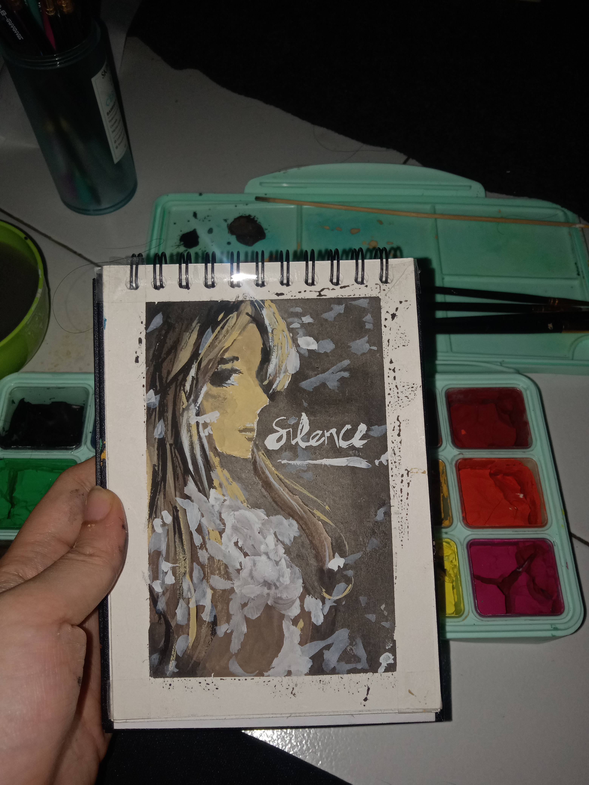
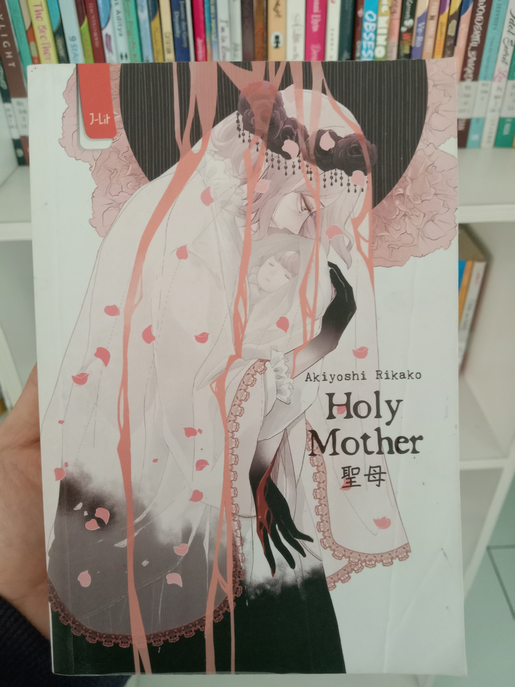

 Terinspirasi dari sebuah cover buku, lukisan ini dibuat menggunakan chat gouache. Dengan media kertas khusus cat dan menggunakan kuas lukis.
Karya ini dibuat menggunakan aplikasi digital untuk menggambar yaitu ibispaint. Termasuk dalam karya digital art. Karya ini mengambil referensi dari gedung Fakultas Adab dan Humaniora, UIN Jakarta.
Fiksi
Beberapa tulisan fiksi pernah ditulis. Bisa mampir kesini bila berkenan.
Nonfiksi
Artikel populer yang terbit di IDN Times bisa dibaca .di sini.
 Rekomendasi buku yang harus dibaca untuk para pecinta buku genre misteri dan thriller. Banyak mengandung plottwist yang seru. untuk lebih jelas dan lengkapnya klik di sini.